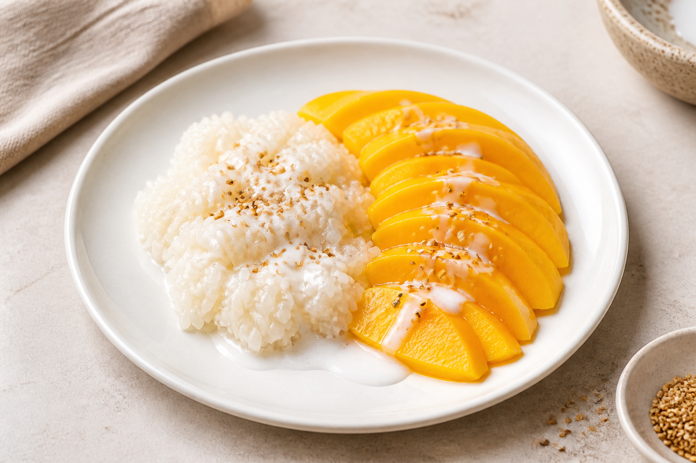

Recipe · Vegan
Mango Sticky Rice
Warm coconut-scented sticky rice with ripe mango and a delicate sesame finish.
Prep 10 minCook 40 minServes 4Easy
Start cooking

Method
- Soak. Rinse the rice, then soak in water for at least 4 hours or overnight.
- Steam. Drain and steam in a lined basket for 25–30 minutes until tender and translucent.
- Make coconut syrup. Warm 220 ml coconut milk with sugar and salt until dissolved; do not boil.
- Rest. Fold the hot rice into the syrup. Cover and rest for 20 minutes.
- Finish. Thicken remaining coconut milk with cornflour slurry. Serve rice with sliced mango, coconut sauce and sesame.
Chef's note: Soaking is essential; it allows the glutinous rice to steam evenly without a hard centre.
NORIKO used here